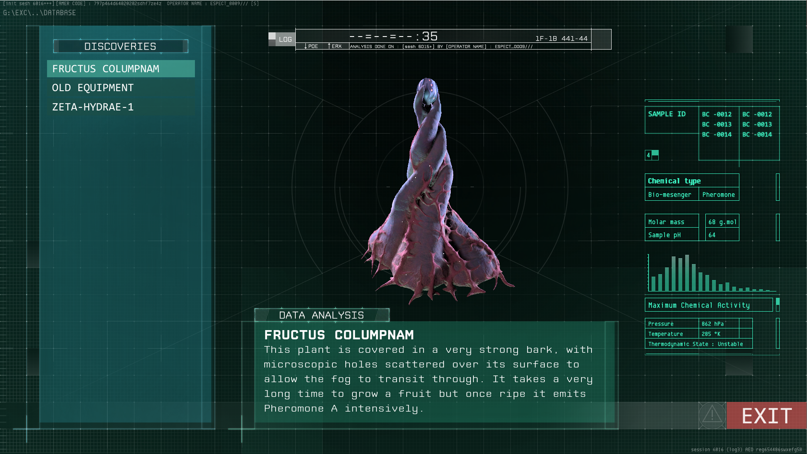

A PLANET IN THE FOG
TEAM
9 people
ENGINE
Unreal Engine 4
ROLE
Game designer / Gameplay programmer (3C)
TIME
9 months (June 2020)
A PLANET IN THE FOG is a first-person exploration game in which you play an astronaut on an exoplanet covered in a mysterious fog. Go on expeditions, explore the treacherous environment and study the ecosystem in order to discover the planet's true nature.
We were a team of 9 people and developed a demo (vertical slice) for the game in 9 months.
I was the game designer and gameplay programmer responsible for the 3C, working in Blueprint.
3C DESIGN / PROTOTYPING
An in-depth climbing system:
The player plants their picks in mineral veins to scale huge walls, and are challenged on their stamina management and dexterity.
A

An automatic ledge-grabbing system for whenever the player jumps or falls, working on any angular ledge.
A cinematic rappel feature, inspired by Firewatch. Placeable by the player on any angular ledge, it rewards prior observation by opening vertical shortcuts for backtracking.

A flare-throwing feature allowing the player to inspect rifts and get feedback on the fall's lethality.

The player plants their picks in mineral veins to scale huge walls, and are challenged on their stamina management and dexterity.
A
2-min video
from the pre-production offers a breakdown of the different mechanics.An automatic ledge-grabbing system for whenever the player jumps or falls, working on any angular ledge.
A cinematic rappel feature, inspired by Firewatch. Placeable by the player on any angular ledge, it rewards prior observation by opening vertical shortcuts for backtracking.
A flare-throwing feature allowing the player to inspect rifts and get feedback on the fall's lethality.
DOCUMENTATION
I documented the entire climbing feature on our
Confluence-powered wiki
: the whole team can access it from anywhere, and I wrote it with both designers' and programmers' needs in mind.Featuring:
— Intentions and target dynamic
— Controls
— Feature descriptions with visuals mockups and technical specifications
— Tweakable variables
— Signs and feedback

DATA SYSTEMS
I created spreadsheets for the other game designers to work with: the sheets are then exported to CSV and imported as DataTables in UE4.
This way, designers don't have to work inside the engine if they don't need to.

I used the data above to populate the journal procedurally in UMG UI, as shown below.
